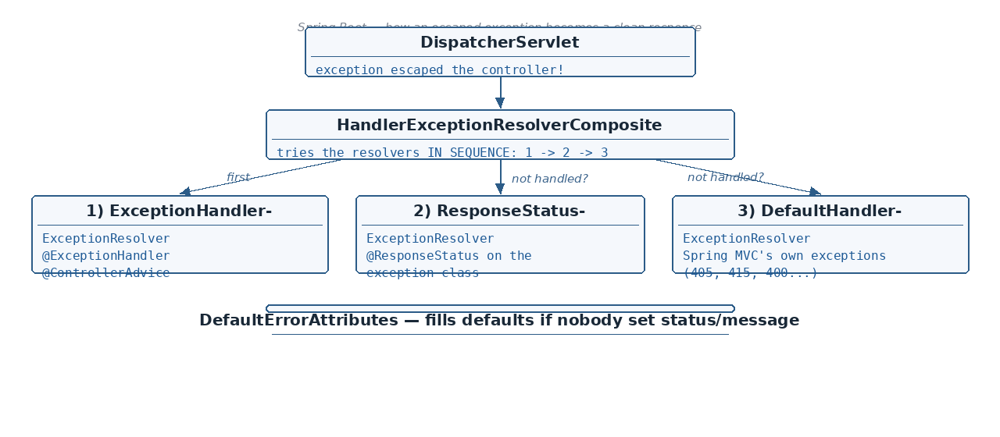

Controller level exception handling
☕ 10 min read · 🎬 Video walkthrough · 📊 UML diagram · 💻 Runnable code
⚡ In a nutshell — The 5 very important classes involved in handling an exception (the resolver hierarchy) · The runtime flow: how DispatcherServlet tries resolver 1 → 2 → 3, then DefaultErrorAttributes · Controller-level @ExceptionHandler — all 3 ways to write it, and what parameters it takes · Global exception handling with @ControllerAdvice + the priority rules
When an exception escapes your controller, Spring does not just crash — a small family of resolver classes takes over. These 5 are very important:

@ExceptionHandler / @ControllerAdvice@ResponseStatusThe notes say it twice: this diagram is important — learn it. Interview questions on exception handling almost always start from this hierarchy.
How to read the flow:
DispatcherServlet detects that an exception was thrown while handling the request.HandlerExceptionResolverComposite, which tries the three resolvers in sequence: 1 → 2 → 3.DefaultErrorAttributes, and the error response is returned to the client.But what about a NullPointerException, or a custom exception with no annotations? All 3 resolvers do not understand it, so status and message are not set. When control reaches the DefaultErrorAttributes class, it fills the values in the HTTP response with default values.
Good to know: those "default values" are the familiar JSON you get from an unhandled error —
timestamp,status: 500,error: "Internal Server Error",path— produced via Spring Boot's/errormapping (BasicErrorController).
Q. What do these 3 resolvers handle? — the next three sections answer this, one resolver at a time.
Resolver (1) is responsible for handling these two annotations: @ExceptionHandler and @ControllerAdvice.
Write the handler inside the controller class itself. First, a custom exception to work with:
public class CustomException extends RuntimeException {
private final HttpStatus status;
public CustomException(String message, HttpStatus status) {
super(message);
this.status = status;
}
public HttpStatus getStatus() { return status; }
}
Variant 1 — return a ResponseEntity directly:
@RestController
public class UserController {
@GetMapping("/users/{id}")
public User getUser(@PathVariable Long id) {
throw new CustomException("User " + id + " not found", HttpStatus.NOT_FOUND);
}
@ExceptionHandler(CustomException.class) // <-- written INSIDE the controller
public ResponseEntity<String> handleCustomException(CustomException ex) {
return new ResponseEntity<>(ex.getMessage(), ex.getStatus());
}
}
Variant 2 — return an ErrorResponse POJO (a structured JSON body instead of a plain string):
public class ErrorResponse { // the POJO
private Date timestamp;
private String message;
private int status;
public ErrorResponse(Date timestamp, String message, int status) {
this.timestamp = timestamp;
this.message = message;
this.status = status;
}
// getters — Jackson needs them to serialize the JSON body
}
@ExceptionHandler(CustomException.class)
public ResponseEntity<ErrorResponse> handleCustomException(CustomException ex) {
ErrorResponse response = new ErrorResponse(new Date(),
ex.getMessage(), ex.getStatus().value());
return new ResponseEntity<>(response, ex.getStatus());
}
Variant 3 — use response.sendError(...):
@ExceptionHandler(CustomException.class)
public void handleCustomException(HttpServletResponse response,
CustomException ex) throws IOException {
response.sendError(HttpStatus.BAD_REQUEST.value(), ex.getMessage());
}
You can write multiple @ExceptionHandler methods in the same class for various exceptions.
HttpServletResponseHttpServletRequestException itselfYou can use them in any order. And one handler can cover more than one exception type — in that case, use the parent exception as the method parameter:
@ExceptionHandler({CustomException.class, IllegalArgumentException.class})
public ResponseEntity<String> handleMany(Exception ex) { // parent type parameter
return new ResponseEntity<>(ex.getMessage(), HttpStatus.BAD_REQUEST);
}
The problem with controller-level @ExceptionHandler: if multiple controllers throw the same type of exception, the same handling has to be repeated in every controller — which is nothing but code duplication.
Solution — one global handler class:
@ControllerAdvice
public class GlobalExceptionHandler {
@ExceptionHandler(CustomException.class) // exact match — checked first
public ResponseEntity<ErrorResponse> handleCustom(CustomException ex) {
ErrorResponse body = new ErrorResponse(new Date(),
ex.getMessage(), ex.getStatus().value());
return new ResponseEntity<>(body, ex.getStatus());
}
@ExceptionHandler(Exception.class) // parent — the fallback
public ResponseEntity<String> handleAny(Exception ex) {
return new ResponseEntity<>("Something went wrong",
HttpStatus.INTERNAL_SERVER_ERROR);
}
}
Priority rules:
@ExceptionHandler could apply? → first the exact parameter match, then the parent exception handler.Added: for REST APIs prefer
@RestControllerAdvice=@ControllerAdvice+@ResponseBody, so every handler's return value goes straight into the response body. Also, since Spring 6 / Boot 3 there is a standard error body class —ProblemDetail(RFC 7807:type,title,status,detail,instance) — return it from a handler instead of your own POJO.
Added: since it keeps coming up — this is what a
ProblemDetailhandler actually looks like. No custom POJO, standardapplication/problem+jsoncontent type:
@RestControllerAdvice
public class GlobalExceptionHandler {
@ExceptionHandler(CustomException.class)
public ProblemDetail handleCustom(CustomException ex) {
ProblemDetail pd = ProblemDetail.forStatusAndDetail(ex.getStatus(), ex.getMessage());
pd.setTitle("User lookup failed");
pd.setType(URI.create("https://api.example.com/errors/user-not-found"));
pd.setProperty("timestamp", Instant.now()); // extra fields are allowed
return pd;
}
}
{ "type": "https://api.example.com/errors/user-not-found",
"title": "User lookup failed", "status": 404,
"detail": "User 123 not found", "instance": "/users/123",
"timestamp": "2026-01-01T10:00:00Z" }
Added: real projects have more than one advice class (one per module, one in a shared library...). Two rules interviewers expect you to know:
Ordering. When several advices could handle the same exception, Spring asks them in
@Order order — lowest value wins first; an un-ordered advice has lowest precedence:
@RestControllerAdvice
@Order(1) // consulted BEFORE the order-2 advice
public class SecurityErrorAdvice { ... }
@RestControllerAdvice
@Order(2) // the general fallback advice
public class GlobalExceptionHandler { ... }
Careful: ordering is by advice class, not by best match — if the order-1 advice has an
@ExceptionHandler(Exception.class), it swallows everything before the order-2 advice
ever sees the exception, even if order-2 has an exact-match handler.
Scoping. By default an advice applies to all controllers; it can be narrowed:
@RestControllerAdvice(basePackages = "com.app.payments") // only that package
@RestControllerAdvice(assignableTypes = {PaymentController.class}) // only these classes
@RestControllerAdvice(annotations = InternalApi.class) // only controllers
// carrying @InternalApi
Added: the most common real-world exception to handle globally. When a
@Valid @RequestBodyfails Bean Validation, Spring throwsMethodArgumentNotValidExceptionbefore your controller method runs — and without a handler the client gets a bare 400 with no hint of which field was wrong.
public record CreateUserRequest(
@NotBlank(message = "name must not be blank") String name,
@Email(message = "email must be valid") String email) { }
@PostMapping("/users")
public User create(@Valid @RequestBody CreateUserRequest request) { ... }
The global handler that turns field errors into a useful body:
@ExceptionHandler(MethodArgumentNotValidException.class)
public ResponseEntity<Map<String, String>> handleValidation(
MethodArgumentNotValidException ex) {
Map<String, String> errors = new HashMap<>();
ex.getBindingResult().getFieldErrors()
.forEach(fe -> errors.put(fe.getField(), fe.getDefaultMessage()));
return ResponseEntity.badRequest().body(errors);
// { "name": "name must not be blank", "email": "email must be valid" }
}
Related exceptions worth one handler each: ConstraintViolationException (validation on
@PathVariable/@RequestParam with @Validated on the class) and
HttpMessageNotReadableException (malformed/unparseable JSON body).
ResponseEntityExceptionHandler — Spring ships an advice base class with protected
methods for ~20 built-in MVC exceptions (MethodArgumentNotValidException, 405, 415...).
Extend it and override just what you need; everything else keeps sane defaults:
@RestControllerAdvice
public class GlobalExceptionHandler extends ResponseEntityExceptionHandler {
@Override
protected ResponseEntity<Object> handleMethodArgumentNotValid(
MethodArgumentNotValidException ex, HttpHeaders headers,
HttpStatusCode status, WebRequest request) {
ProblemDetail pd = ProblemDetail.forStatus(status);
pd.setTitle("Validation failed");
pd.setProperty("errors", ex.getBindingResult().getFieldErrors().stream()
.map(fe -> fe.getField() + ": " + fe.getDefaultMessage()).toList());
return new ResponseEntity<>(pd, headers, status);
}
}
Resolver (2) handles uncaught exceptions annotated with @ResponseStatus.
(i) status only — the exception's own message goes into the response:
@ResponseStatus(HttpStatus.BAD_REQUEST)
public class CustomException extends RuntimeException {
public CustomException(String message) {
super(message);
}
}
// thrown and not caught anywhere -> response: status 400 + exception message
(ii) status + reason — and reason has high priority (it replaces the exception message):
@ResponseStatus(value = HttpStatus.BAD_REQUEST, reason = "Invalid")
public class CustomException extends RuntimeException { /* ... */ }
// response: status 400, message "Invalid" — whatever super(message) said is ignored
Added:
@ResponseStatusis static — the status is fixed at compile time, and it only works on exception classes you own. The dynamic, no-annotation alternative is throwingResponseStatusExceptionfrom anywhere:
java throw new ResponseStatusException(HttpStatus.NOT_FOUND, "User " + id + " not found");Status is chosen at runtime, no custom exception class needed, and in Spring 6 it extends
ErrorResponseException, so the body comes out as an RFC 7807ProblemDetailautomatically. Trade-off: sprinkling HTTP statuses through service code couples the domain layer to the web layer — many teams prefer domain exceptions + one@RestControllerAdvicedoing the mapping.
@ExceptionHandler(CustomException.class)
@ResponseStatus(value = HttpStatus.BAD_REQUEST, reason = "Invalid")
public ResponseEntity<Object> handleCustomException(CustomException e) {
return new ResponseEntity<>("You are not authorized",
HttpStatus.FORBIDDEN);
}
The handler is invoked and returns 403 FORBIDDEN with body "You are not authorized" — but the client still receives:
Why? This is handled by the Spring framework itself: right after your handler method returns, the framework immediately applies the @ResponseStatus values on top. ServletInvocableHandlerMethod.class does this.
@ExceptionHandler(CustomException.class)
@ResponseStatus(value = HttpStatus.BAD_REQUEST, reason = "Invalid")
public void handleCustomException(HttpServletResponse response,
CustomException ex) throws IOException {
response.sendError(HttpStatus.FORBIDDEN.value(), "Unauthorized");
}
Why does this blow up? When you do response.sendError, it:
Then the Spring framework applies @ResponseStatus and does exactly the same again — status, message, commit — but a second commit is not allowed, so the ExceptionResolver throws an exception itself.
Advice — never use both of them together. If you really want to use both annotations, keep the method body empty and let @ResponseStatus do all the work:
@ExceptionHandler(CustomException.class) // 1st
@ResponseStatus(value = HttpStatus.BAD_REQUEST, reason = "Invalid") // 2nd
public void handleCustomException(CustomException ex) {
// do nothing.
}
Resolver (3) handles Spring Framework related exceptions only — pre-defined Spring MVC exceptions like MethodNotFound, NoResourceFound, etc.
Good to know: the real class names —
HttpRequestMethodNotSupportedException→ 405,NoResourceFoundException→ 404,HttpMediaTypeNotSupportedException→ 415,MissingServletRequestParameterException→ 400. That is why hitting a GET endpoint with POST gives a clean 405 without you writing any handler.
Class (5) is not one of the three sequenced resolvers — it is the safety net at the end of the flow. If no resolver understood the exception (NullPointerException, unannotated custom exceptions...), the status and message are still unset, so DefaultErrorAttributes fills the HTTP response with the default values (timestamp, status, error, path).
ProblemDetail or ErrorResponseException — RFC-standard bodies with zero custom POJOs; @RestControllerAdvice (= @ControllerAdvice + @ResponseBody) is the modern global handler.code, correlation ID included; clients should parse errors once, not per-service.DefaultErrorAttributes fills defaults for the rest.@ExceptionHandler (controller level) and @ControllerAdvice (global). Priority: controller level first, then global; inside global: exact match first, then parent exception.@ExceptionHandler methods can take HttpServletRequest, HttpServletResponse, Exception — any order; for multiple exception types use the parent exception parameter.@ResponseStatus; the reason attribute has high priority. VVI: combined with @ExceptionHandler, the framework (ServletInvocableHandlerMethod) overwrites your handler's status/message — and with sendError it even double-commits and throws. Never use both together (or keep the method body empty).@Order — lowest value consulted first, per advice class not per best match; scope an advice with basePackages / assignableTypes / annotations.@Valid @RequestBody failure → MethodArgumentNotValidException (before the controller runs); extract getBindingResult().getFieldErrors(); or extend ResponseEntityExceptionHandler and override its protected methods.ProblemDetail.forStatusAndDetail(...) + setProperty(...) = RFC 7807 body with zero custom POJOs.ResponseStatusException = runtime-chosen status without annotations or handlers — handy, but couples services to HTTP; prefer domain exceptions + one advice for the mapping.Next topic: JDBC and JdbcTemplate — where JDBC sits in the architecture, and how Spring Boot removes its boilerplate.
👏 Found this useful? Give it a few claps so more developers discover it, and follow for the whole series — every article ships with a UML diagram, runnable code, a narrated video, and a companion PDF. Happy building! 🚀